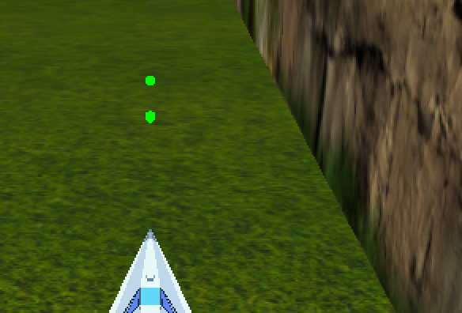
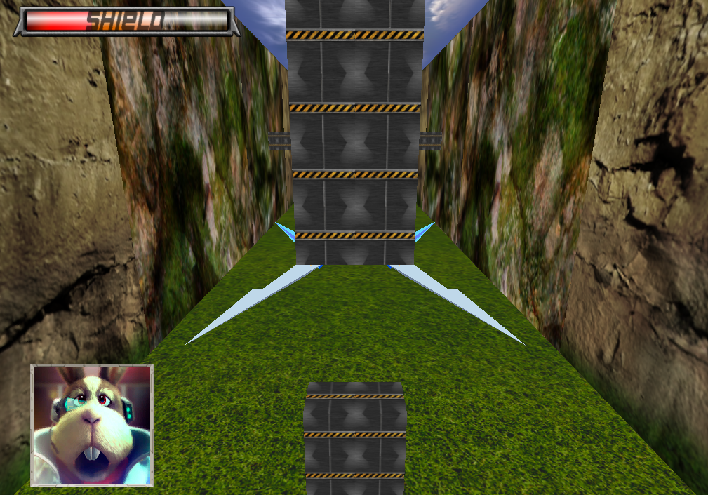
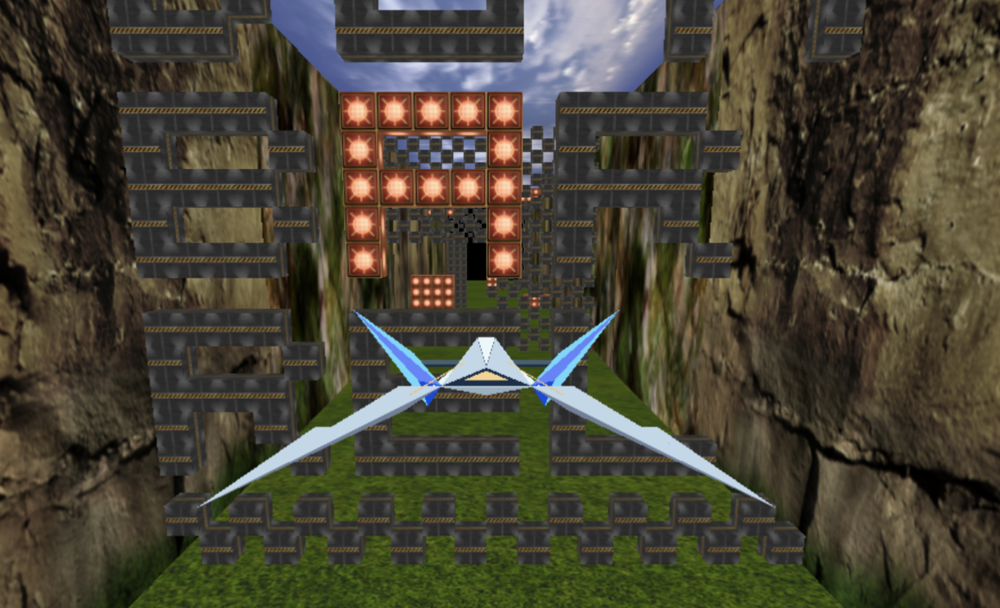
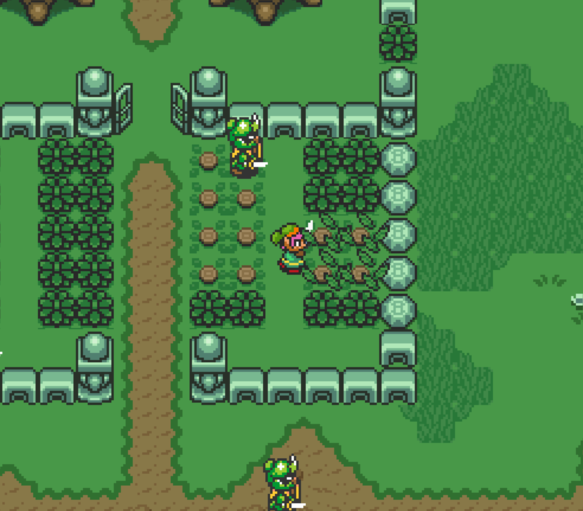
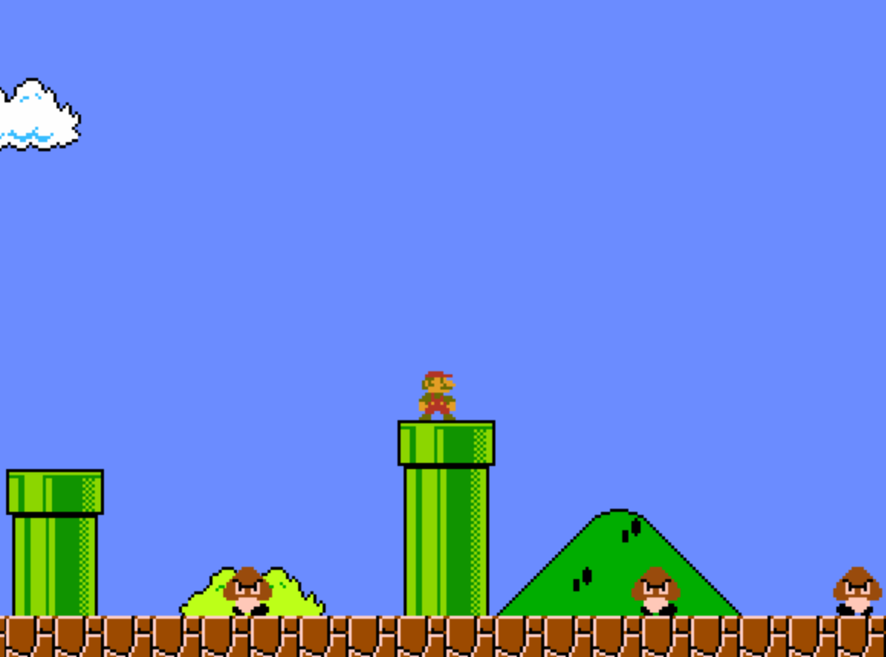
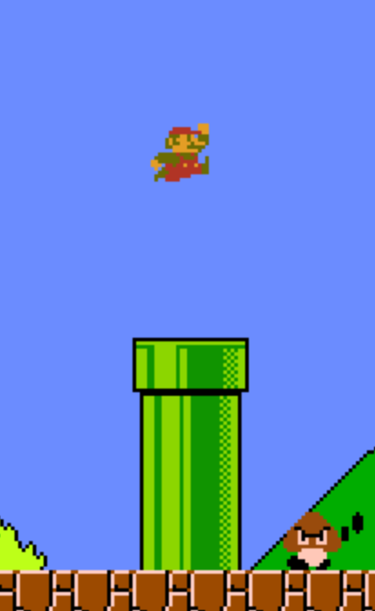
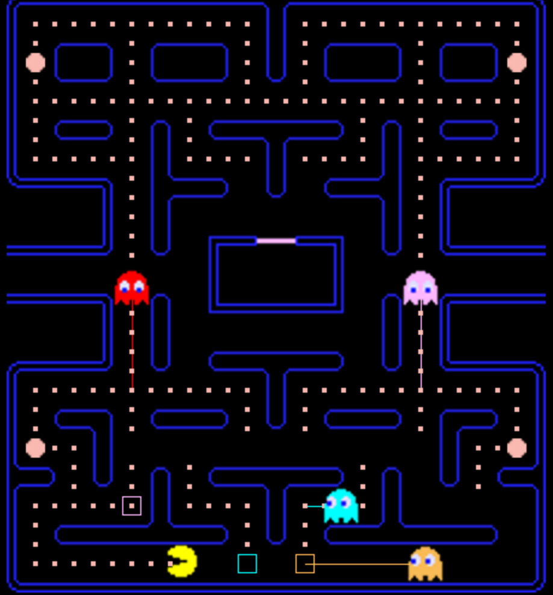
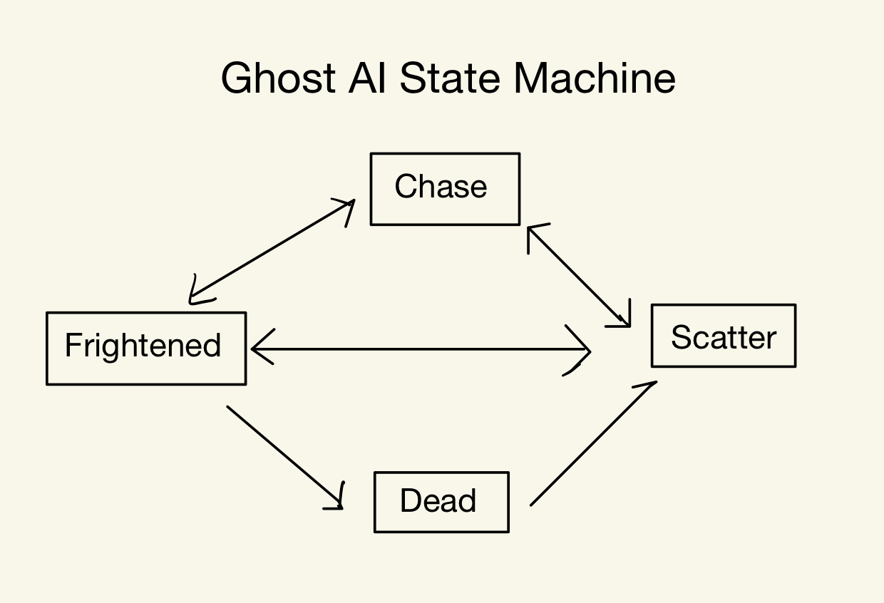
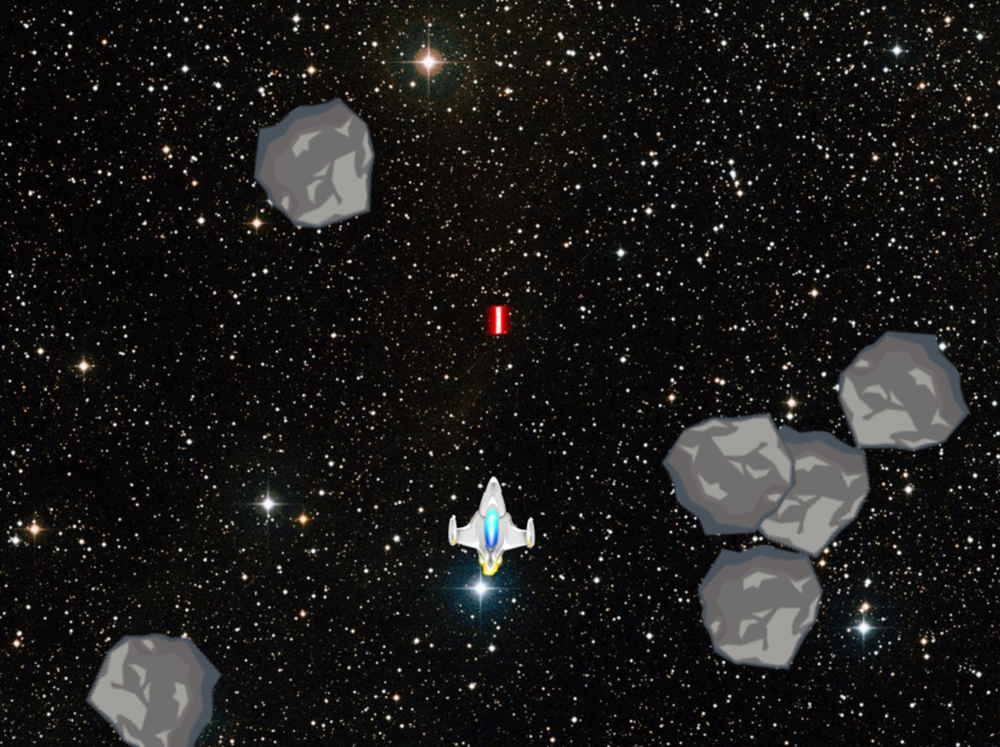

Lasers

Peppy Reminds User to do the Barrel Roll

Generative Tunnels

Star Fox Tunnel
- 3D Star Fox-Inspired Gameplay
- Dynamic space tunnel with infinite scrolling.
- Sleek follow camera for cinematic movement.
- Procedural Level Generation
- Endless, randomly generated tunnel sections.
- Obstacle patterns evolve for increasing challenge.
- Explosive Combat
- Bullet impacts trigger chain explosions.
- Destructible environments add strategy.
- Adaptive Difficulty
- Speed scales up over time for intensity.
- Smart enemy placement keeps gameplay engaging.
- Classic Barrel Roll
- Signature spin move with shields recharge.
- Peppy reminds you when you forget!
- Immersive Sound & HUD
- Reactive soundtrack and sound effects.
- Minimalist HUD with shield indicators.
- Retro Arcade Feel
- Fast-paced gameplay with seamless action.
- Clean, stylized visuals with vibrant textures.
Zelda Recreation
- Classic Zelda-Inspired Action
- Top-down combat with directional sword swings.
- Breakable objects and hidden paths.
- Smart Enemy AI
- A* pathfinding for patrolling soldiers.
- Stun, pursuit, and adaptive movement.
- Interactive World
- Pixel-perfect collisions with walls and enemies.
- Camera following Link
- Immersive Effects
- Authentic music, attack, and destruction sounds.
- Animated hit reactions and chain explosions.
- Future Potential
- Expandable with rupees, health, and secrets.
A* Pathfinding for Enemies and Zelda Animations

Goombas Collide with Pipes

Mario Jump

Mario Platformer
- Classic Mario Platforming
- Run, jump, and stomp enemies.
- Responsive controls and smooth physics.
- Side-Scrolling Level
- Dynamic camera that only moves forward.
- Seamless platform navigation.
- Enemy AI
- Goombas patrol and react to obstacles.
- Gravity and collision-aware movement.
- Interactive World
- Breakable and interactable blocks.
- Jump physics with realistic momentum.
- Polished Animations
- Idle, run, jump, and stomp animations.
- Smooth sprite transitions.
- Immersive Audio
- Classic Mario music and sound effects.
- Jump, stomp, and win sounds.
- Win & Lose Conditions
- Flagpole for level completion.
- Pitfalls and enemy collisions trigger death.
- Extra Potential
- Question blocks with coins and power-ups.
- More enemy types like Koopas.
Pathfinding to Choose next Node

Ghost AI State Machine

Pacman Recreation
- Movement & AI: Uses pathfinding between path nodes. Ghosts move in Scatter, Chase, Frightened, and Dead states with unique behaviors.
- Unique Ghost Behavior: Each ghost follows a different AI strategy in Chase mode, targeting Pac-Man with distinct logic.
- Animations: Changes based on movement direction and state, including scared and dead variations.
- Audio System: Uses
SDL_mixer to manage sounds with prioritization when channels are full.
- Final Touches: Implements intro timing, resets ghosts on Pac-Man’s death, and ensures all behaviors align with classic Pac-Man rules.
Asteroids Recreation
- Actors & Components: Implements an entity-component system with actors managing position, rotation, and state.
- Game Object Management: Uses a vector to track actors, adding and removing them.
- Sprite System: Implements texture caching and rendering using SDL, optimizing repeated texture use.
- Movement: Adds a movement component that updates position and rotation based on velocity and input.
- Ship Controls: Implements WASD movement and changes the ship’s sprite when accelerating.
- Asteroids: Spawns moving asteroids with random positions and implements screen-wrapping.
- Laser Shooting: Fires lasers with a cooldown, sets their lifetime, and adds collision detection with asteroids.
- Collision System: Destroys asteroids and lasers on impact using distance-based collision detection.
- Game Loop & Cleanup: Ensures proper update cycles and memory management for all actors and textures.
Screen-Wrapping Asteroids and Shooting Space Ship
